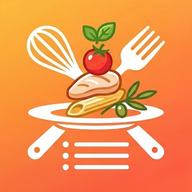

冷蔵庫にある材料は？
選んだ材料をたくさん使う料理から順に出します
運命のルーレット
定番の料理ほど出やすくなっています（設定で変更できます）
ここになにかが出ます！
今日の気分は？
思いつかない日のひらめき
最近食べたもの・足りない栄養・季節から、いつもと違うメニューを理由つきで提案します
食べたものの記録
「食べた」で記録すると、除外や栄養バランスに使われます

何を作るか迷ったときに
選んだ材料をたくさん使う料理から順に出します
定番の料理ほど出やすくなっています（設定で変更できます）
最近食べたもの・足りない栄養・季節から、いつもと違うメニューを理由つきで提案します
「食べた」で記録すると、除外や栄養バランスに使われます